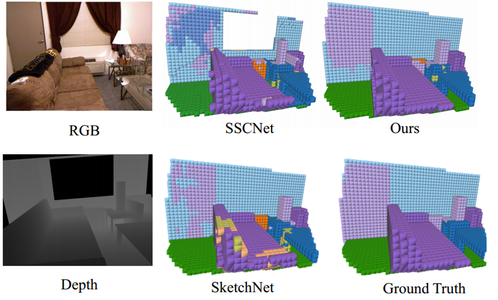

Publications



IMENet: Joint 3D Semantic Scene Completion and 2D Semantic Segmentation through Iterative Mutual Enhancement
Jie Li, Laiyan Ding, Rui Huang
International Joint Conference on Artificial Intelligence - IJCAI 2021